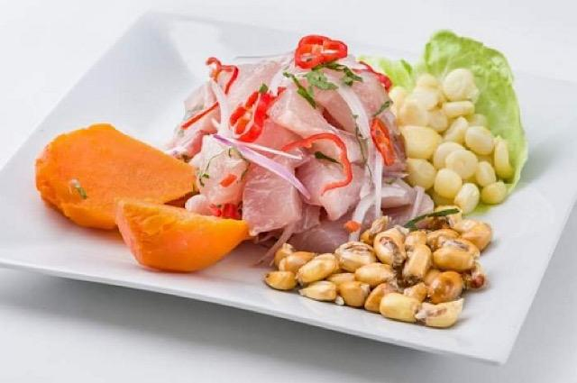

La Carta
Entradas
El ceviche es un plato típico de la gastronomía peruana y ha tenido tanto éxito que sus sabores se han extendido a otros países latinoamericanos. Hay muchas versiones de ceviche y es imposible decir que una sola es la correcta, pero en esta oportunidad compartiremos contigo una receta de ceviche peruano que intenta rescatar todo lo tradicional del delicioso ceviche original del Perú. El ceviche es un plato típico de la gastronomía peruana y ha tenido tanto éxito que sus sabores se han extendido a otros países latinoamericanos. Hay muchas versiones de ceviche y es imposible decir que una sola es la correcta, pero en esta oportunidad compartiremos contigo una receta de ceviche peruano que intenta rescatar todo lo tradicional del delicioso ceviche original del Perú. El ceviche es un plato típico de la gastronomía peruana y ha tenido tanto éxito que sus sabores se han extendido a otros países latinoamericanos. Hay muchas versiones de ceviche y es imposible decir que una sola es la correcta, pero en esta oportunidad compartiremos contigo una receta de ceviche peruano que intenta rescatar todo lo tradicional del delicioso ceviche original del Perú.
| Ensaladas | Para empezar | Entradas a la parrilla |
|---|---|---|
| Salad Bar | Porción de Parmesano | Anticuchos de corazón |
| Ensalada rico sabor | Champiñones salteados | Mollejas |
| Ensalada Esecial | Lomo a la Tártara | chorizos |